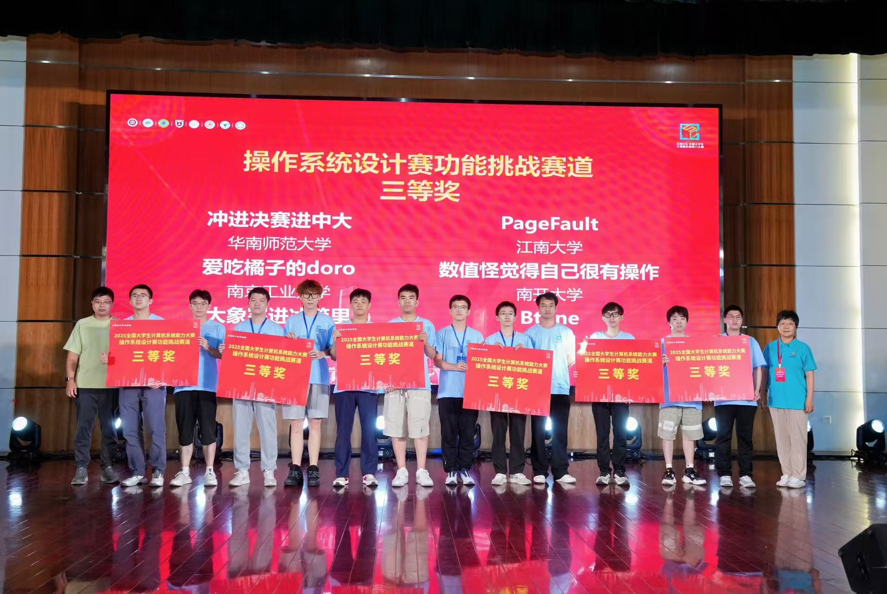
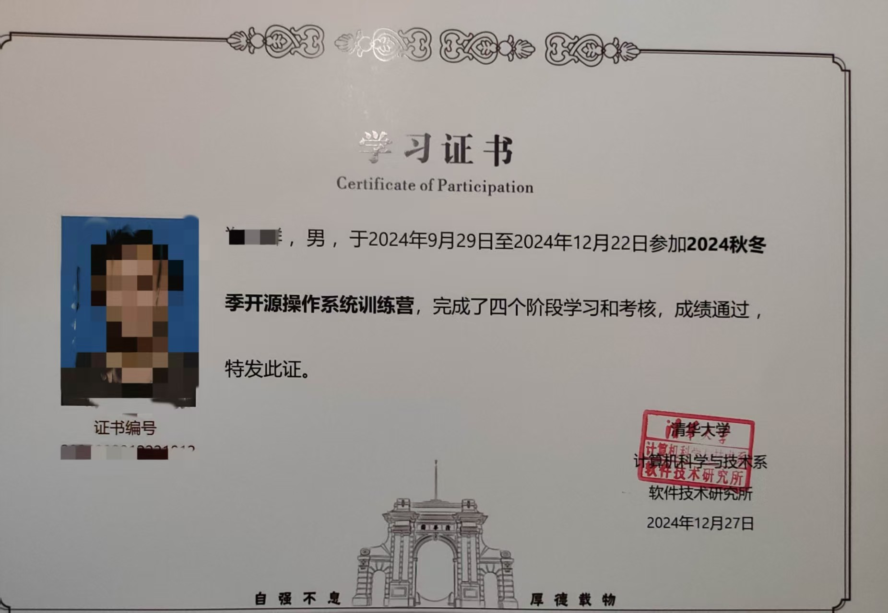

OS功能挑战赛2025总结
随着最近 OS 功能挑战赛 2025 的落幕，既标志着这几个月比赛工作的结束，也标志着本人研一生活的结束。本文将作为一个简单的记录，对本次比赛的过程以及得到的经验教训做一个总结，同时也对未来的学习研究做一个展望。
比赛回顾
首先说一下比赛结果—— 三等奖 ，一个稍微有些令人失望的结果。但不管如何，比赛过程中的收获却是实打实的。

项目的源代码已经开放在了 github 中，欢迎参考：
LordaeronESZ/SEVFS: A simple encrypted versioning file system.
时间线
接下来，我将简单梳理一下本次比赛的整个时间线。
首先是 3 月份，我们完成了比赛的报名和选题工作。其中选题工作并不那么顺利，最开始我们选题备选方案为：（1）proj121-使用哈希页表实现虚拟机的 stage-2 页表 和 （2）proj319-支持 RISC-V 架构的文件级加密文件系统。由于个人科研方向为虚拟化方向，因此两个题目中更偏向于前者。但通过对往年的参赛作品进行调研发现，已经有队伍做过了该题目并且基本完成了题目的所有要求，并最终获得了一等奖——我们再选择该题目能做的工作很有限，考虑再三后最终还是敲定了后者作为选题。
随后便开始了初期的调研工作，由于文件系统是操作系统中我们不太熟悉的模块，因此首要工作便是学习其基本的设计与实现。我们选择的学习目标是 xv6，路径主要包括阅读源码（对照网上博客）、GDB 调试内核等方法，最终团队各成员建立起了对（基于 inode 结构的）文件系统的较为具象化的认知。这其中还发生了一件插曲：某一天我在查看赛题清单时发现，我们的选题 proj319 突然从上面消失了，于是便尝试联系了赛题导师，他给的回复是：赛题 在今年不再被支持 ，建议我们选择其他赛题。当时的想法是我们已经在该题目上花费了一定的时间了，就这么更换选题未免有些令人泄气，因此借由导师的帮助，向主办方说明了情况，赛题便又被重新列上了清单，但是仍然没有技术支持。
时间来到 4 月份，我们确定了一套基本的技术路线：
- 基于 xv6 文件系统实现一个基本的文件加密和版本管理的原型。
- 移植到 Linux 中。
- 进一步的完善和优化。
这时候的基本分工较为清晰：我作为队长负责实现文件加密和版本管理原型，队员 A 负责将 xv6 文件系统的设计移植到 Linux 中，队员 B 则负责构建一个基本的运行环境，目标是能够使用 QEMU 模拟器运行一个我们自己编译的内核和自己制作的根文件系统。队员 B 的工作较为简单，很快便完成了。但是队员 A 的文件系统移植工作进展缓慢，主要原因是 xv6 文件系统没有 VFS 层，直接与内核整体相耦合，要进行这样的移植工作量属实不小。而我的版本管理原型在 xv6 这样简单教学操作系统上实现起来也处处受限，项目就此 陷入了瓶颈 。
进入了五月份，我对项目的进展实在有些着急。因为比较残酷的是，时间已经过去了两个月了，我们项目的实际进度还是——零，毕竟我们的目标作品是 Linux 上的加密文件系统，而非 xv6 上的加密文件系统。于是在五一假期期间，我打算调整技术路线，改为：
- 基于开源的教学用 Linux 内核文件系统——simplefs 进行开发。
- 对 simplefs 进行完善和优化。
- 对 simplefs 进行扩展，实现文件加密和版本管理机制。
我首先是将 simplefs 进行了一定程度的精简：（1）将对多内核版本的支持舍弃，仅面向 Linux 6.12 版本。（2）删去日志的支持。并将其命名为 SEVFS（Simple Encrypted Versioning File System），至此，我们的基准文件系统就此诞生，项目开发终于 进入了正轨 。
五月份算是整个比赛时间线中最为开发密集的一个月。我们完成了两级密钥结构的文件级加密机制，并参考 Versionfs 的设计实现了一个基本的版本管理机制。基本上一个完整的作品算是诞生了，后续便是 bug 修复和功能完善的工作。
六月底是初赛作品提交截至的时间，因此在六月初对文件加密和版本管理机制进行完善之后，便开始着手准备文档、PPT 和演示视频等初赛材料，这个阶段的文档、PPT 什么的都制作得相对简陋，想着后续能够进一步完善。
七月初的几天没有做什么工作，一直在等待着决赛名单的发布。一直到大约 10 号的时候，名单终于发出，我们便又开始投入到工作中去。由于此前在录制演示视频时发现了一些版本管理机制引入的 bug，我们的首要任务便是将其修复，这部分由我来完成。此外，为了考虑引入一些创新性的设计，我让队员 A 调研 TPM 相关的内容，并尝试引入基于 TPM 的密钥管理方式。而队员 B 则要求对之前遗留的与加密和版本管理无关的 bug 进行修复。这个月的工作现在回看，是相当低效的。由于长时间没有接触项目代码，我对之前实现的版本管理机制的细节已经有些生疏，导致 bug 修复的效率非常低，但好在最终还算是完成了。而队员 B 的工作进展也十分缓慢，在我看来主要原因还是在于我——提出的任务要求不够具体。
时间来到八月份，月初我和队友 A 请了个暑休假期，等回来时离决赛作品的提交只剩下一周时间了。这一周基本没干别的，只是完善文档、重新制作答辩 PPT、准备答辩。最终在 8 月 19 日出发前往武汉，20 日上午便完成了答辩的工作，随后在武汉玩了一天半的时间，22 日参加完颁奖典礼便返回了学校。
经验总结
根据上面的描述，不难发现，整个比赛的时间安排其实是比较零碎的。真正的密集开发过程其实只有 五月一个月 而已，其他大部分时间都只是在调研、小修小补以及制作文档材料，这样的时间比例个人认为是不太合理的。出现这种情况的一个很重要的原因是 材料准备开始的太早了 ，导致在开展文档撰写等工作时不紧不慢，效率十分低下。想着进一步的开发工作后面可以继续完成，但由于思维惰性的存在，以及长时间不接触项目导致对其的陌生感和畏惧感，最终原先计划实现的很多功能特性就此不了了之了。结果就是我们最终提交的作品基本上与五月底完成的初始版本没有太大的区别，还处在一个非常初级的阶段：支持的版本留存策略比较简陋，版本存储策略也只有全量存储的方式……
同样的情况还发生在文档制作上，文档的一部分章节我们起初也写得比较简陋，想着后续能够继续完善，但长时间不接触之后也就将其搁置了，最终没能做出什么修改。由此得到的一个经验教训是：一个待办项不要留存太长时间 ，最好设置一个 deadline，并尽量始终对其保持一定的熟悉度，防止热情的消散。
另一个经验教训是：作为队长（leader），要想最大化队员的工作效率，应该尽量 将派发的工作任务足够细化 ，而不应该对此进行逃避（这与个人懒于处理琐事的个性相关），只是简单地要求“调研相关内容”等等。
最后， 演讲部分很重要 。功能挑战赛由于没有客观评测分数，而是完全由评委主观来判断，因此无论项目的实际内容做得如何，至少表面功夫得到位。而这主要分为两个方面——仓库记录和现场答辩。前者我认为我们算是完成得很不错的，不管是 Git commit 记录的完备，还是编码的规范性，亦或是 gitlab 的协同开发工作流的应用，都足够令人满意，这大概也是初赛能得到 $32/36$ 这样一个不错分数的主要原因。但后者则显得差了一些，准备时间不足固然是原因之一，但更主要的原因还是我不愿意花太多的时间在打磨 PPT 这样的“琐事”上，最终也没能按照导师的建议好好地对其进行完善，导致 PPT 的演讲效果不是太好，虽然答辩时的临场发挥不算太差，但最终还是与二等奖失之交臂，属实有些遗憾。
未来展望
简单总结一下研一这一学年的学习经历，首先是竞赛等活动：去年的 7 月 ~ 11 月 随实验室同门参与了 AI 系统相关的比赛——先导杯，并最终获得了 二等奖 的成绩，不过我在其中贡献相对较低，更多的是一次经历。另外在 10 月 ~ 12 月间带领我们学校的本科生 & 研究生参与清华大学和泉城实验室主办的开源操作系统训练营，最终总共有 3 名同学进入了最后的项目阶段，而我是其中唯一一位 通过并获得证书 的。同时我还尝试参与了操作系统应用赛的华东区域赛，但最终由于时间原因没能坚持下去。最后便是今年的 3 月 ~ 8 月作为队长的身份参与操作系统功能挑战赛，并最终获得了 三等奖 的成绩。

在研究院实习期间，我主要做了两部分的工作：首先是为 QEMU-SW 模拟器引入了对硬件虚拟化的模拟，使得其能够在 TCG 模拟环境下启动一个 QEMU/KVM 虚拟机，现在已完成。其次是着手研究 AMD SEV-SNP 和 Arm CCA 等机密虚拟机（CVM）设计方案，并尝试在 SW 下设计并实现一个基本的 CVM 原型，目前工作仍在推进中。
总的来说，这一年学习所带来的能力提升是非常显著的，尤其是工程能力方面。接下来的一年应该将更多的时间放在学术层面，争取早日找到合适的科研创新点，并完成研究生所要求的科研工作。总之，继续努力吧！
 微信
微信 支付宝
支付宝